303. That’s an error
Please use a computer
to view the URL.


Introduce la contraseña para ver la página.


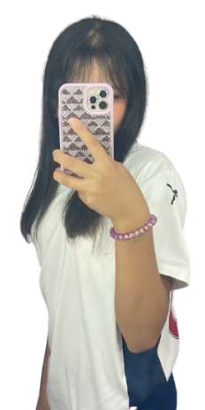
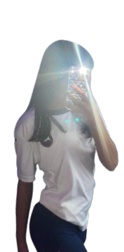
Inicio
2023
16/12/2024
02/2025
03/2025
13/04/2025
06/2025
12/2025
27/01/2025
04/2026
05/2026
06/2026
10/07/2026
07/2026
4to, 6to, Primaria, acosar, Jair, miré, guapa, potencial, novia, hablar, ligarme, alguien
noviembre, hablar, Daiana, acercarme, buscarte, conocerte, gustar, 6 días, pedirle, Instagram, ayuda, Dais, apoyo, 16 de diciembre de 2024, 7 pm, novio
ayuda, Daiana, seca, cortante, desahogarme, apoyo, escuchar, agradecer, sentirme mejor, febrero de 2025, estuviste para mí
terminar, Daiana, sentirme mal, desahogo, noche, conocernos, enamorarme, marzo de 2025, gustarme, enamorarme de ti.
enamoraste, tres semanas, amar, novia, 13 de abril, terminar, 27, alguien más, problemas, historia, enamorado, amor
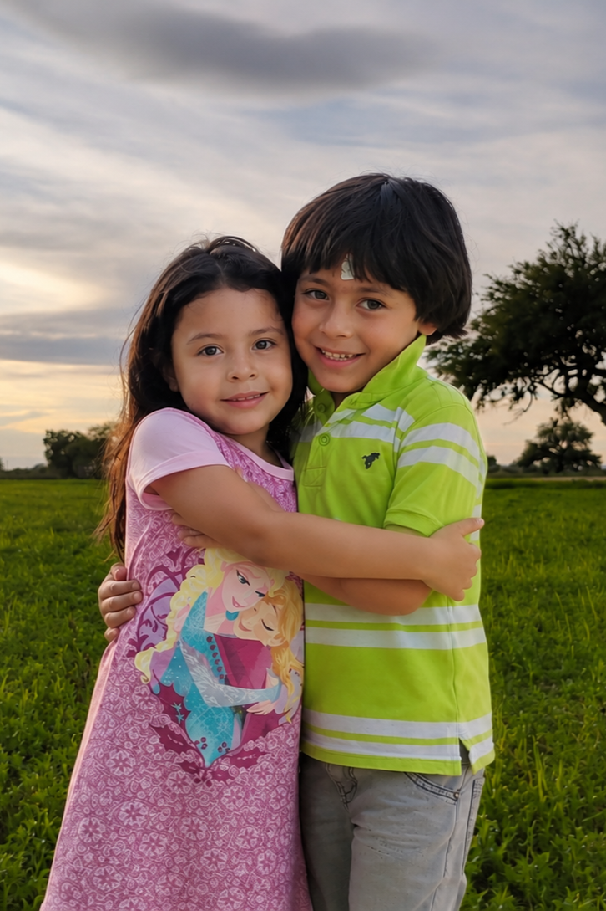
junio, favorito, verte, infieles, parejas, cambiar, cumpleaños, regalo, abrazos, beso, olor, 12 de junio de 2025
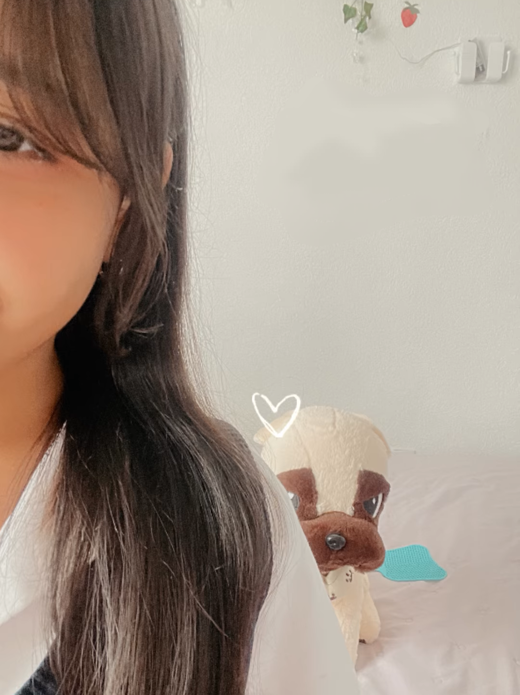
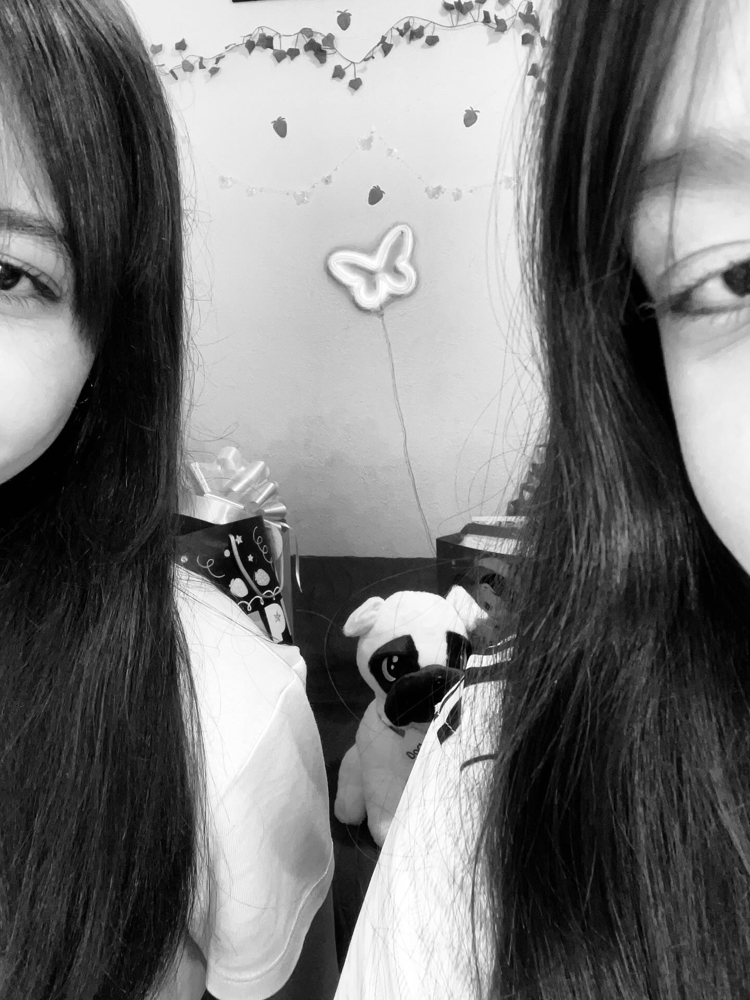
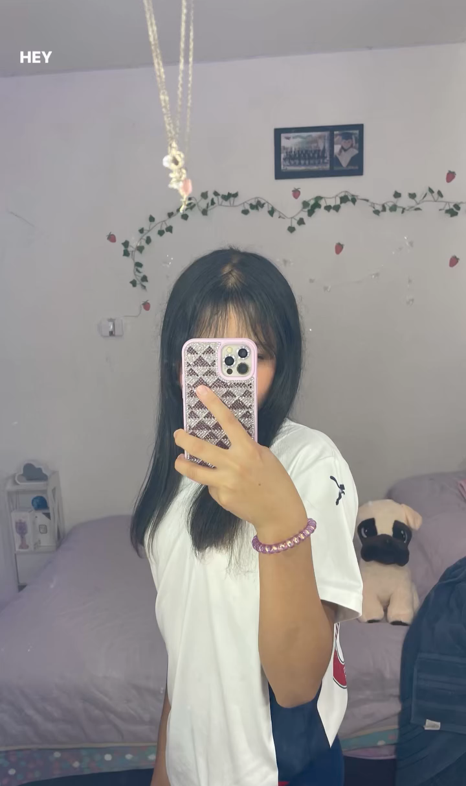
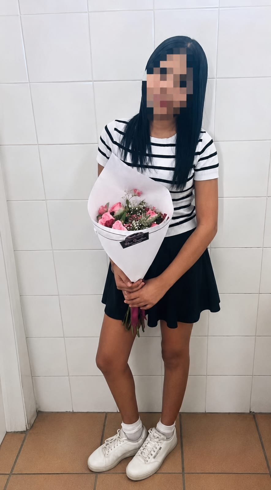
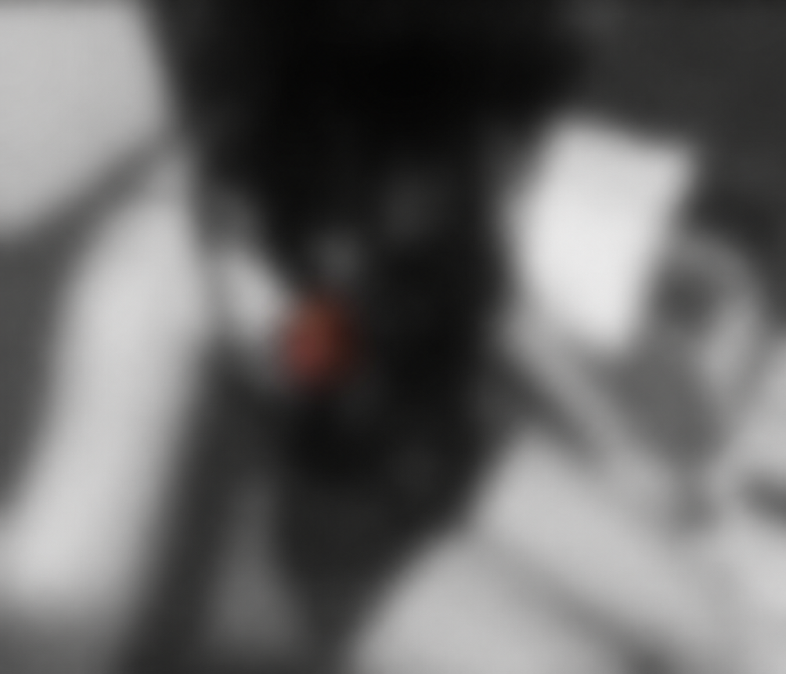
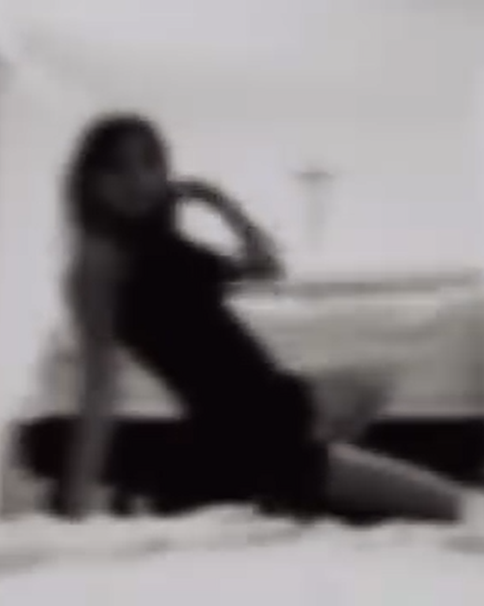
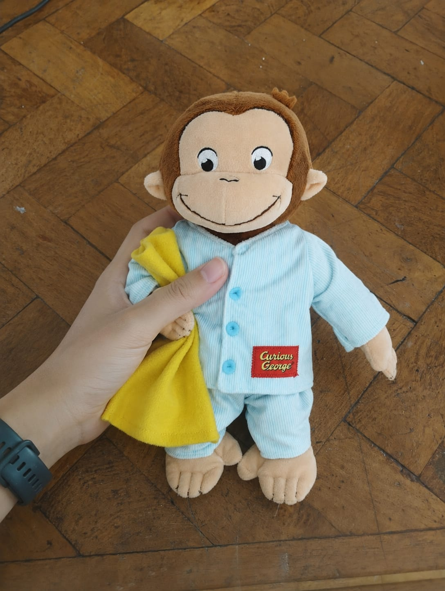


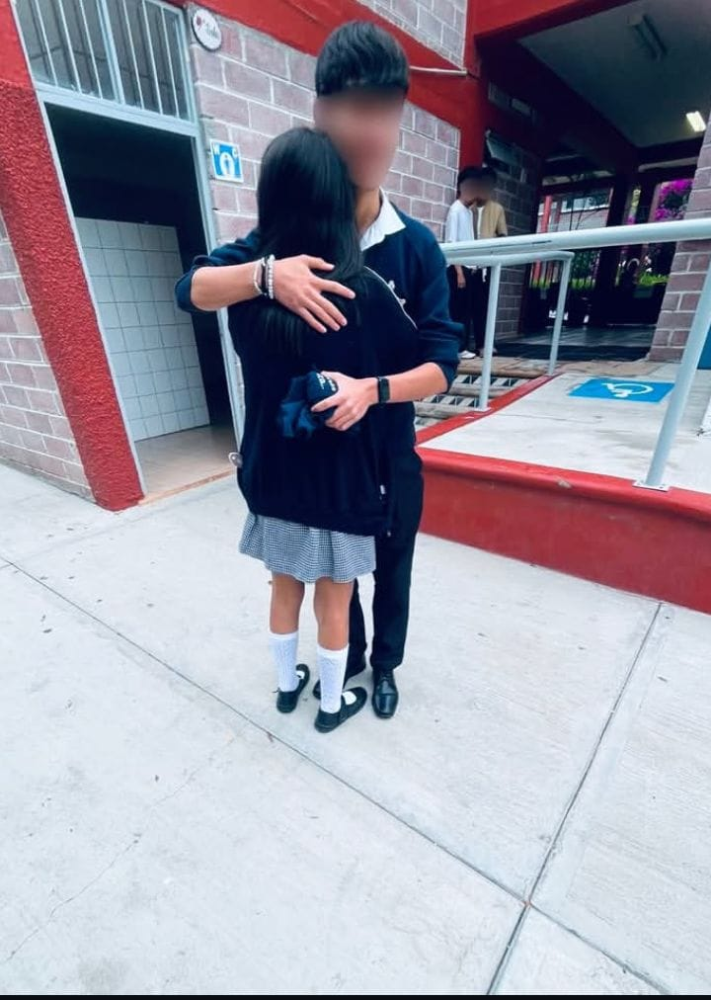
Please use a computer
to view the URL.